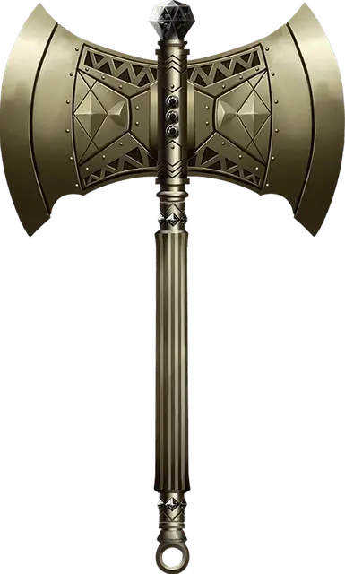

Топор берсерка
Berserker Axe
Оружие (любой топор), редкое (требуется настройка)

Рекомендованная стоимость 501-5 000 зм
Вы получаете бонус +1 к броскам атаки и урона, совершённым этим магическим оружием. Кроме того, пока вы настроены на это оружие, максимум ваших хитов увеличивается на 1 за каждый полученный уровень.
Проклятье. Этот топор проклят, и это проклятье простирается и на того, кто настраивается на него. Пока вы остаётесь прокляты, вы не хотите расставаться с топором, и всегда держите его под рукой. Вы также совершаете с помехой броски атаки другим оружием, кроме случаев, когда в пределах 60 футов нет врагов, которых вы можете видеть или слышать.
Каждый раз, когда враждебное существо причиняет вам урон, а топор при этом находится при вас, вы должны преуспеть в спасброске Мудрости Сл 15, иначе станете берсерком. Будучи берсерком, вы обязаны своим действием в каждом раунде атаковать этим топором ближайшее существо. Если вы можете совершать дополнительные атаки частью действия Атака, вы совершаете эти атаки, переходя к следующему ближайшему существу, после того как расправитесь с текущей целью. Если у вас есть несколько возможных целей, вы атакуете того, кого выберете случайным образом. Вы остаётесь берсерком, пока не получится так, что в начале вашего хода в пределах 60 футов от вас не останется существ, которых вы можете видеть или слышать.